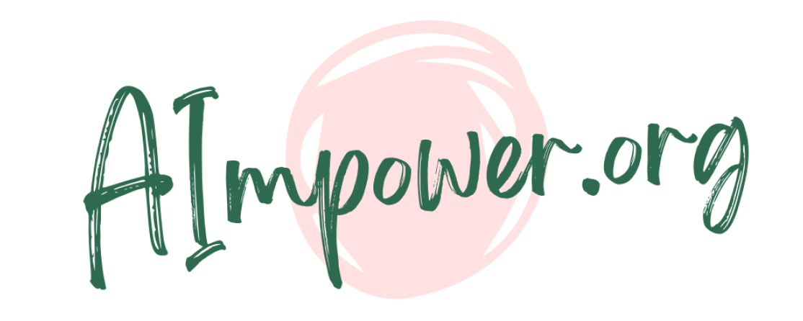

– Present
UI/UX Designer
Digital Creative Asia
Shanghai, China
UI/UX designer.
Industrial design background.
I learn by trying, failing, and staying with something long enough for it to become part of me.
That resilience shapes how I design. I care about people, not just users. I strive to create experiences that are not only responsible but truly worth cherishing.
Digital Creative Asia
Shanghai, China
 Google
Google
Remote · Contract
VITA Global (CHINESE UNION)
Hybrid · Internship

AImpower.orgMountain View, CA / Remote · Contract
Unity
Shanghai, China / On-site · Internship
Hybrid Ecologies Creative Lab, ShanghaiTech University
Covestro
Shanghai, China / Hybrid · Internship
ShanghaiTech University
Product Materials and Applications (Mar-Jun); Design Thinking (Jul-Aug).
MPS in Information Science, UI/UX Track
Bachelor of Engineering, Industrial Design
Product Design, Westphal College of Media Arts & Design